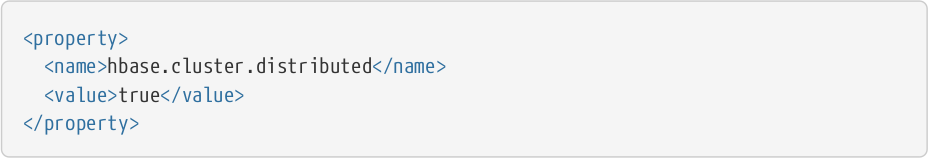
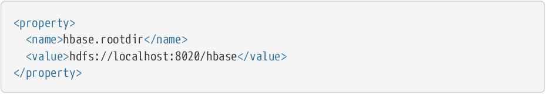

Instalação do HBase:
Esta atividade consistiu da instalação do Hbase utilizando o Hadoop como sistema de arquivos em um servidor linux.
Hbase é um banco de dados distribuído open-source orientado a coluna, modelado a partir do Google BigTable e escrito em Java.
O Hbase tem fácil integração com o Hadoop, sendo assim, pode utilizar o MapReduce para distribuir o processamento dos dados, podendo
processar facilmente quantidades muito grandes de dados.
Para esta atividade será utilizado o HDFS do Hadoop como sistema de arquivos.
Para a instalação do Apache Hbase no Debian foram realizados os seguintes passos:
Obs: Para realizar a instalação do Apache Hbase o Java deve estar previamente instalado.
Download e instalação do Hbase
Para efetuar o download deve-se selecionar uma das versões disponivel em http://www.apache.org/dyn/closer.cgi/hbase/.
Após o download devemos extrair os arquivos, e acessar o a pasta criada:
$ tar xzvf hbase-3.0.0-SNAPSHOT-bin.tar.gzConfiguração
$ cd hbase-3.0.0-SNAPSHOT/
Antes de iniciar o Hbase e necessário setar a variável de ambiente JAVA_HOME, no arquivo conf/hbase-env.sh
Descomente a linha que começa com JAVA_HOME informando a localização correta do executável do Java
1) Configurando o Hbase com o Hadoop HDFS:
Esta configuração permitirá que os dados do Hbase sejam salvos no sistema de arquivos do Hadoop.
Edite os seguintes arquivos no diretório de instalação do Hbase:
Permite que o Hbase execute em modo distribuido.
Aponta para a instância do sistema HDFS
Então basta inicializar o Hbase
./bin/start-hbase.sh
2) verificar diretório do HBase no HDFS
Se tudo correu bem o Hbase criou um diretorio no HDFS.
Na configuração feita anteriormente ficará armazenado em /hbase/ no HDFS
Para verificar basta rodar o comando hadoop fs no diretório /bin para listar este diretório.
Tudo pronto, Hbase instalado!Fontes:
https://pt.wikipedia.org/wiki/HBase
https://hbase.apache.org/